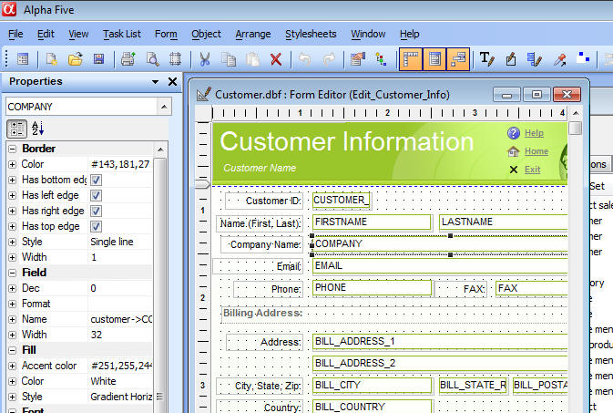
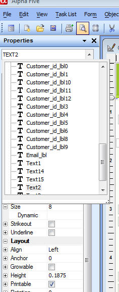
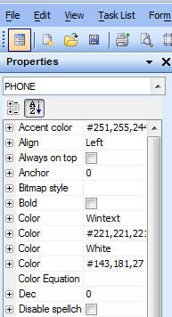

Layout Editors - Modeless Property Editor
You can now edit the properties of the objects on your Layout using a modeless, dockable Property Grid. This makes editing properties much quicker than having to right click on an object and bring up a modal properties dialog.
The image below shows a Form in Design Mode with the Properties Dock Panel visible.
As soon as you set a value in the Properties Dock Panel, the Layout is immediately updated to reflect the property value. If you don't like the change you just made, select the Undo command from the menu.
You will notice that the property names have a + icon to their left. This allows you to define 'Dynamic Properties'. See the section on Dynamic Properties for more information.

Notice that at the top of Properties Dock Panel there is a dropdown box that shows you all of the controls on the Layout. When you make a selection from this dropdown box, the corresponding object in the Layout is selected.

Similarly, when you select an object in the Layout, the dropdown box is automatically synchronized to show the selected object and the Properties Dock Panel is immediately updated to show the properties for the selected object.
Sorting the Properties
By default, the properties in the Properties Dock Panel are grouped into categories. However, there are a lot of properties, and finding the property you want to set can sometimes be difficult. Clicking the 'AZ' icon just under the dropdown box will remove the grouping and show a sorted list of property names, making it easier to find a particular property.

The Properties Dialog Box
The Properties Dialog box (which is opened by right clicking on an object and selecting Properties...) was the primary method for setting object properties in V9 and older versions. This method is still available in V10 and can be use in conjunction with, or alternatively to, the Properties Dock Panel.